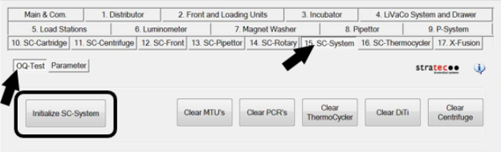
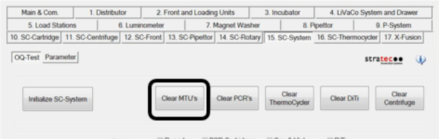
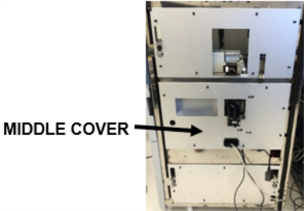
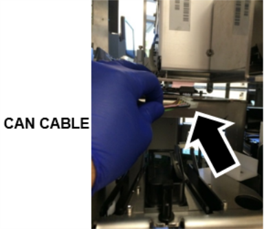
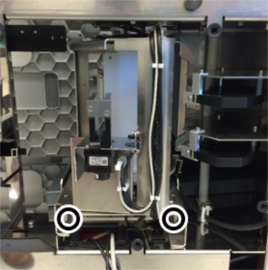
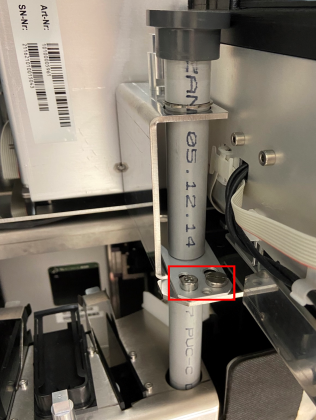
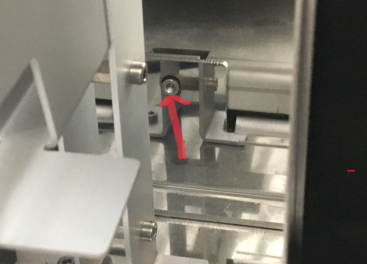

Fusion Rotary Distributor Removal and Replacement

|
Note—A Firmware Installation procedure must be performed when replacing a module or PCB. |
Parts and Materials Required
- FSE Tool Kit
- Bench Top Pads
- Rotary Distributor Module
- (1) PCR Cartridge (for Verification)
- (1) MTU
 Multi-tube unit—Container used to process tests in the instrument. An MTU contains five separate reaction tubes. The MTU is moved through the instrument by the linear distributor and includes five tiplets for pipettiing to be used in the mag wash station. (for Verification)
Multi-tube unit—Container used to process tests in the instrument. An MTU contains five separate reaction tubes. The MTU is moved through the instrument by the linear distributor and includes five tiplets for pipettiing to be used in the mag wash station. (for Verification)
Time Required
- 60 Minutes
Rotary Distributor Removal Procedure
- Put on proper PPE.
- Start Service Software.
- From the 15. SC-System tab, select OQ-Test, then click Initialize SC-System.

- Click Clear MTUs.
Allow the System to clear any MTU’s from the system.
- Power down the Panther System and PC.
- Unfuse the Panther Fusion Module from the Panther to access the right side of the unit.
Refer to Service Procedures > Unfuse Procedure. - Remove the middle cover to access the Rotary Distributor module.

- From the left side of the system, disconnect the Rotary Distributor CAN cable located on top of module.
(Using a flat screwdriver may be helpful to disconnect the cable.)
- Using a 4mm hex driver, loosen the 2 mounting screws securing the Rotary Distributor module.

-
Using a 4mm hex driver,
loosen the hex screw near the bottom left side of the Waste Tube Chute.Once the screws are loose, free the Chute by sliding the metal tab away from the Chute (towards the left side of the Fusion). If necessary, loosen the shoulder screw with a flathead screwdriver.
Then pull the Waste tube up and out of the side car. Place the Waste Tube on a sterile benchtop pad.

- Slide out the Rotary Distributor module carefully, making sure that the cables don’t get caught underneath the module.
Caution—Before removing the Distributor, inspect the bottom of the Centrifuge motor and ensure there is enough clearance between the motor and the top of the Distributor. If the Centrifuge motor is blocking removal of the Distributor, you need to remove the Centrifuge before removing the Distributor.
- Place the Rotary Distributor module on a sterile benchtop pad.
Rotary Distributor Replacement Procedure
- Reverse the Removal Procedure, including fusing the Fusion Module onto the Panther.
Refer to Service Procedures > Fuse Procedure.

Verification
- Power on the Panther System and PC.
- Load firmware to the new Rotary Distributor module.
Refer to Panther Fusion System Installation > Run Instrument Setup (Fusion). - Teach the Rotary Distributor to all modules.
Refer to Service Procedures > Teach Rotary Distributor to All Stations. - Teach the Linear Distributor to the Handoff Station.
Refer to Service Procedures > Teach Handoff Station to Linear Distributor. - Teach the Fusion Pipettor to the Rotary Distributor.
Refer to Service Procedures > Panther Fusion System Pipettor Teaching. - Perform a Panther Fusion System OQ Test.
Refer to Service Procedures > Panther Fusion System OQ Test. - 2 cycles
- Check the Report, Initialize, PCR Cartridges, and MTU checkboxes only
- When complete, Clear MTUs and Clear PCRs.
 button at the top of the page to send feedback, comments, or change requests.
button at the top of the page to send feedback, comments, or change requests.